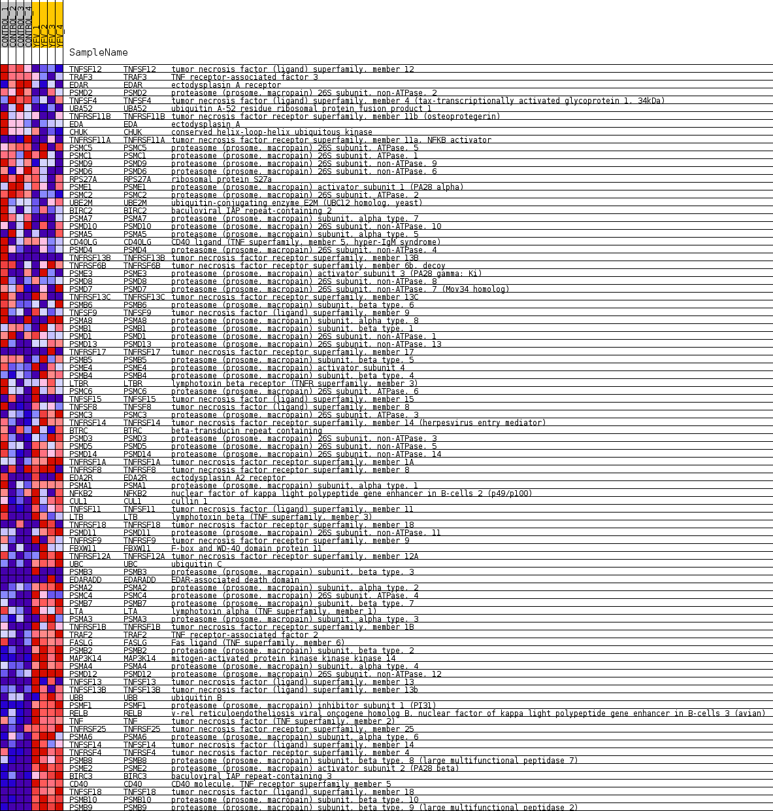
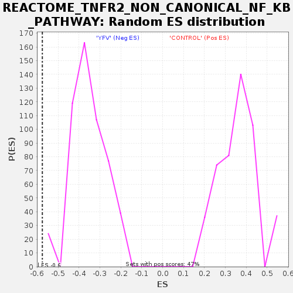

Profile of the Running ES Score & Positions of GeneSet Members on the Rank Ordered List
| Dataset | MATRIZ_GSE99081_collapsed_to_symbols.gsea_CLASE_99081.cls#CONTROL_versus_YFV |
| Phenotype | gsea_CLASE_99081.cls#CONTROL_versus_YFV |
| Upregulated in class | YFV |
| GeneSet | REACTOME_TNFR2_NON_CANONICAL_NF_KB_PATHWAY |
| Enrichment Score (ES) | -0.57542485 |
| Normalized Enrichment Score (NES) | -1.6135342 |
| Nominal p-value | 0.0 |
| FDR q-value | 0.06377681 |
| FWER p-Value | 0.865 |
| SYMBOL | TITLE | RANK IN GENE LIST | RANK METRIC SCORE | RUNNING ES | CORE ENRICHMENT | |
|---|---|---|---|---|---|---|
| 1 | TNFSF12 | tumor necrosis factor (ligand) superfamily, member 12 | 16 | 1.783 | 0.0332 | No |
| 2 | TRAF3 | TNF receptor-associated factor 3 | 336 | 0.924 | 0.0311 | No |
| 3 | EDAR | ectodysplasin A receptor | 593 | 0.784 | 0.0303 | No |
| 4 | PSMD2 | proteasome (prosome, macropain) 26S subunit, non-ATPase, 2 | 711 | 0.738 | 0.0372 | No |
| 5 | TNFSF4 | tumor necrosis factor (ligand) superfamily, member 4 (tax-transcriptionally activated glycoprotein 1, 34kDa) | 933 | 0.666 | 0.0363 | No |
| 6 | UBA52 | ubiquitin A-52 residue ribosomal protein fusion product 1 | 1969 | 0.488 | -0.0185 | No |
| 7 | TNFRSF11B | tumor necrosis factor receptor superfamily, member 11b (osteoprotegerin) | 1998 | 0.484 | -0.0109 | No |
| 8 | EDA | ectodysplasin A | 2054 | 0.476 | -0.0052 | No |
| 9 | CHUK | conserved helix-loop-helix ubiquitous kinase | 2761 | 0.373 | -0.0418 | No |
| 10 | TNFRSF11A | tumor necrosis factor receptor superfamily, member 11a, NFKB activator | 2791 | 0.368 | -0.0365 | No |
| 11 | PSMC5 | proteasome (prosome, macropain) 26S subunit, ATPase, 5 | 3127 | 0.329 | -0.0510 | No |
| 12 | PSMC1 | proteasome (prosome, macropain) 26S subunit, ATPase, 1 | 3697 | 0.267 | -0.0811 | No |
| 13 | PSMD9 | proteasome (prosome, macropain) 26S subunit, non-ATPase, 9 | 3732 | 0.263 | -0.0782 | No |
| 14 | PSMD6 | proteasome (prosome, macropain) 26S subunit, non-ATPase, 6 | 3986 | 0.243 | -0.0892 | No |
| 15 | RPS27A | ribosomal protein S27a | 4134 | 0.232 | -0.0939 | No |
| 16 | PSME1 | proteasome (prosome, macropain) activator subunit 1 (PA28 alpha) | 4391 | 0.212 | -0.1056 | No |
| 17 | PSMC2 | proteasome (prosome, macropain) 26S subunit, ATPase, 2 | 4826 | 0.173 | -0.1292 | No |
| 18 | UBE2M | ubiquitin-conjugating enzyme E2M (UBC12 homolog, yeast) | 4846 | 0.171 | -0.1271 | No |
| 19 | BIRC2 | baculoviral IAP repeat-containing 2 | 4955 | 0.163 | -0.1307 | No |
| 20 | PSMA7 | proteasome (prosome, macropain) subunit, alpha type, 7 | 5238 | 0.134 | -0.1456 | No |
| 21 | PSMD10 | proteasome (prosome, macropain) 26S subunit, non-ATPase, 10 | 5332 | 0.127 | -0.1489 | No |
| 22 | PSMA5 | proteasome (prosome, macropain) subunit, alpha type, 5 | 5659 | 0.102 | -0.1671 | No |
| 23 | CD40LG | CD40 ligand (TNF superfamily, member 5, hyper-IgM syndrome) | 5834 | 0.089 | -0.1762 | No |
| 24 | PSMD4 | proteasome (prosome, macropain) 26S subunit, non-ATPase, 4 | 6348 | 0.049 | -0.2070 | No |
| 25 | TNFRSF13B | tumor necrosis factor receptor superfamily, member 13B | 6483 | 0.040 | -0.2146 | No |
| 26 | TNFRSF6B | tumor necrosis factor receptor superfamily, member 6b, decoy | 6502 | 0.038 | -0.2150 | No |
| 27 | PSME3 | proteasome (prosome, macropain) activator subunit 3 (PA28 gamma; Ki) | 6661 | 0.029 | -0.2242 | No |
| 28 | PSMD8 | proteasome (prosome, macropain) 26S subunit, non-ATPase, 8 | 6710 | 0.026 | -0.2267 | No |
| 29 | PSMD7 | proteasome (prosome, macropain) 26S subunit, non-ATPase, 7 (Mov34 homolog) | 6854 | 0.018 | -0.2352 | No |
| 30 | TNFRSF13C | tumor necrosis factor receptor superfamily, member 13C | 7022 | 0.010 | -0.2454 | No |
| 31 | PSMB6 | proteasome (prosome, macropain) subunit, beta type, 6 | 7048 | 0.008 | -0.2468 | No |
| 32 | TNFSF9 | tumor necrosis factor (ligand) superfamily, member 9 | 9557 | -0.006 | -0.4020 | No |
| 33 | PSMA8 | proteasome (prosome, macropain) subunit, alpha type, 8 | 9584 | -0.007 | -0.4035 | No |
| 34 | PSMB1 | proteasome (prosome, macropain) subunit, beta type, 1 | 9745 | -0.014 | -0.4131 | No |
| 35 | PSMD1 | proteasome (prosome, macropain) 26S subunit, non-ATPase, 1 | 10102 | -0.030 | -0.4346 | No |
| 36 | PSMD13 | proteasome (prosome, macropain) 26S subunit, non-ATPase, 13 | 10422 | -0.053 | -0.4533 | No |
| 37 | TNFRSF17 | tumor necrosis factor receptor superfamily, member 17 | 10450 | -0.056 | -0.4539 | No |
| 38 | PSMB5 | proteasome (prosome, macropain) subunit, beta type, 5 | 10473 | -0.058 | -0.4542 | No |
| 39 | PSME4 | proteasome (prosome, macropain) activator subunit 4 | 10799 | -0.085 | -0.4727 | No |
| 40 | PSMB4 | proteasome (prosome, macropain) subunit, beta type, 4 | 10839 | -0.088 | -0.4734 | No |
| 41 | LTBR | lymphotoxin beta receptor (TNFR superfamily, member 3) | 10988 | -0.101 | -0.4806 | No |
| 42 | PSMC6 | proteasome (prosome, macropain) 26S subunit, ATPase, 6 | 11010 | -0.102 | -0.4800 | No |
| 43 | TNFSF15 | tumor necrosis factor (ligand) superfamily, member 15 | 11012 | -0.102 | -0.4781 | No |
| 44 | TNFSF8 | tumor necrosis factor (ligand) superfamily, member 8 | 11109 | -0.111 | -0.4819 | No |
| 45 | PSMC3 | proteasome (prosome, macropain) 26S subunit, ATPase, 3 | 11528 | -0.149 | -0.5049 | No |
| 46 | TNFRSF14 | tumor necrosis factor receptor superfamily, member 14 (herpesvirus entry mediator) | 11656 | -0.160 | -0.5097 | No |
| 47 | BTRC | beta-transducin repeat containing | 11766 | -0.171 | -0.5132 | No |
| 48 | PSMD3 | proteasome (prosome, macropain) 26S subunit, non-ATPase, 3 | 11846 | -0.178 | -0.5147 | No |
| 49 | PSMD5 | proteasome (prosome, macropain) 26S subunit, non-ATPase, 5 | 11911 | -0.185 | -0.5151 | No |
| 50 | PSMD14 | proteasome (prosome, macropain) 26S subunit, non-ATPase, 14 | 11924 | -0.186 | -0.5123 | No |
| 51 | TNFRSF1A | tumor necrosis factor receptor superfamily, member 1A | 12354 | -0.229 | -0.5345 | No |
| 52 | TNFRSF8 | tumor necrosis factor receptor superfamily, member 8 | 12392 | -0.232 | -0.5323 | No |
| 53 | EDA2R | ectodysplasin A2 receptor | 12663 | -0.261 | -0.5440 | No |
| 54 | PSMA1 | proteasome (prosome, macropain) subunit, alpha type, 1 | 12891 | -0.287 | -0.5526 | No |
| 55 | NFKB2 | nuclear factor of kappa light polypeptide gene enhancer in B-cells 2 (p49/p100) | 12951 | -0.294 | -0.5506 | No |
| 56 | CUL1 | cullin 1 | 12992 | -0.300 | -0.5474 | No |
| 57 | TNFSF11 | tumor necrosis factor (ligand) superfamily, member 11 | 13131 | -0.319 | -0.5498 | No |
| 58 | LTB | lymphotoxin beta (TNF superfamily, member 3) | 13203 | -0.328 | -0.5479 | No |
| 59 | TNFRSF18 | tumor necrosis factor receptor superfamily, member 18 | 13538 | -0.370 | -0.5615 | No |
| 60 | PSMD11 | proteasome (prosome, macropain) 26S subunit, non-ATPase, 11 | 13564 | -0.374 | -0.5559 | No |
| 61 | TNFRSF9 | tumor necrosis factor receptor superfamily, member 9 | 13856 | -0.418 | -0.5659 | No |
| 62 | FBXW11 | F-box and WD-40 domain protein 11 | 14011 | -0.443 | -0.5669 | Yes |
| 63 | TNFRSF12A | tumor necrosis factor receptor superfamily, member 12A | 14048 | -0.450 | -0.5606 | Yes |
| 64 | UBC | ubiquitin C | 14182 | -0.479 | -0.5596 | Yes |
| 65 | PSMB3 | proteasome (prosome, macropain) subunit, beta type, 3 | 14438 | -0.500 | -0.5658 | Yes |
| 66 | EDARADD | EDAR-associated death domain | 14458 | -0.500 | -0.5574 | Yes |
| 67 | PSMA2 | proteasome (prosome, macropain) subunit, alpha type, 2 | 14672 | -0.535 | -0.5603 | Yes |
| 68 | PSMC4 | proteasome (prosome, macropain) 26S subunit, ATPase, 4 | 14766 | -0.557 | -0.5554 | Yes |
| 69 | PSMB7 | proteasome (prosome, macropain) subunit, beta type, 7 | 14794 | -0.565 | -0.5463 | Yes |
| 70 | LTA | lymphotoxin alpha (TNF superfamily, member 1) | 14893 | -0.591 | -0.5410 | Yes |
| 71 | PSMA3 | proteasome (prosome, macropain) subunit, alpha type, 3 | 14958 | -0.609 | -0.5333 | Yes |
| 72 | TNFRSF1B | tumor necrosis factor receptor superfamily, member 1B | 15066 | -0.643 | -0.5276 | Yes |
| 73 | TRAF2 | TNF receptor-associated factor 2 | 15093 | -0.651 | -0.5167 | Yes |
| 74 | FASLG | Fas ligand (TNF superfamily, member 6) | 15094 | -0.651 | -0.5043 | Yes |
| 75 | PSMB2 | proteasome (prosome, macropain) subunit, beta type, 2 | 15120 | -0.662 | -0.4931 | Yes |
| 76 | MAP3K14 | mitogen-activated protein kinase kinase kinase 14 | 15287 | -0.731 | -0.4894 | Yes |
| 77 | PSMA4 | proteasome (prosome, macropain) subunit, alpha type, 4 | 15508 | -0.833 | -0.4871 | Yes |
| 78 | PSMD12 | proteasome (prosome, macropain) 26S subunit, non-ATPase, 12 | 15525 | -0.844 | -0.4719 | Yes |
| 79 | TNFSF13 | tumor necrosis factor (ligand) superfamily, member 13 | 15573 | -0.864 | -0.4582 | Yes |
| 80 | TNFSF13B | tumor necrosis factor (ligand) superfamily, member 13b | 15591 | -0.867 | -0.4427 | Yes |
| 81 | UBB | ubiquitin B | 15642 | -0.918 | -0.4282 | Yes |
| 82 | PSMF1 | proteasome (prosome, macropain) inhibitor subunit 1 (PI31) | 15701 | -0.986 | -0.4128 | Yes |
| 83 | RELB | v-rel reticuloendotheliosis viral oncogene homolog B, nuclear factor of kappa light polypeptide gene enhancer in B-cells 3 (avian) | 15710 | -0.996 | -0.3943 | Yes |
| 84 | TNF | tumor necrosis factor (TNF superfamily, member 2) | 15727 | -1.013 | -0.3758 | Yes |
| 85 | TNFRSF25 | tumor necrosis factor receptor superfamily, member 25 | 15743 | -1.029 | -0.3570 | Yes |
| 86 | PSMA6 | proteasome (prosome, macropain) subunit, alpha type, 6 | 15762 | -1.053 | -0.3380 | Yes |
| 87 | TNFSF14 | tumor necrosis factor (ligand) superfamily, member 14 | 15873 | -1.241 | -0.3210 | Yes |
| 88 | TNFRSF4 | tumor necrosis factor receptor superfamily, member 4 | 15897 | -1.288 | -0.2978 | Yes |
| 89 | PSMB8 | proteasome (prosome, macropain) subunit, beta type, 8 (large multifunctional peptidase 7) | 16014 | -1.655 | -0.2732 | Yes |
| 90 | PSME2 | proteasome (prosome, macropain) activator subunit 2 (PA28 beta) | 16061 | -1.905 | -0.2396 | Yes |
| 91 | BIRC3 | baculoviral IAP repeat-containing 3 | 16076 | -1.975 | -0.2026 | Yes |
| 92 | CD40 | CD40 molecule, TNF receptor superfamily member 5 | 16112 | -2.344 | -0.1598 | Yes |
| 93 | TNFSF18 | tumor necrosis factor (ligand) superfamily, member 18 | 16127 | -2.433 | -0.1141 | Yes |
| 94 | PSMB10 | proteasome (prosome, macropain) subunit, beta type, 10 | 16150 | -2.694 | -0.0638 | Yes |
| 95 | PSMB9 | proteasome (prosome, macropain) subunit, beta type, 9 (large multifunctional peptidase 2) | 16195 | -3.614 | 0.0027 | Yes |

